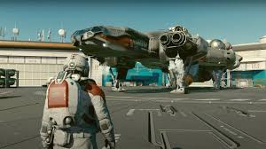
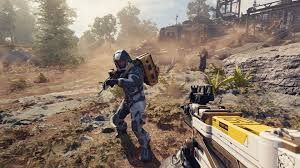

Starfield es un juego de rol de acción y ciencia ficción desarrollado por Bethesda Game Studios, conocido por sus populares títulos como The Elder Scrolls V: Skyrim y Fallout 4. Fue lanzado en septiembre de 2023 y está disponible para PC y Xbox Series X/S. Este es el primer nuevo universo original de Bethesda en más de 25 años, lo que genera una gran expectativa entre los jugadores, ya que el estudio tiene una gran reputación en crear mundos abiertos y detallados.
¿De qué trata Starfield?
En Starfield, los jugadores toman el control de un explorador espacial en un futuro lejano, donde la humanidad ha colonizado el espacio. El juego se desarrolla en un universo expansivo, el cual está compuesto por más de 1.000 planetas que se pueden explorar. La historia principal se centra en el descubrimiento de un misterioso artefacto que podría cambiar el curso de la historia de la humanidad. A medida que te adentras en el universo, te enfrentarás a diferentes facciones, realizarás misiones, y explorarás planetas desconocidos, cada uno con sus propios secretos, recursos y desafíos.
Starfield ha recibido críticas generalmente positivas, aunque con algunas críticas mixtas en áreas específicas.
 